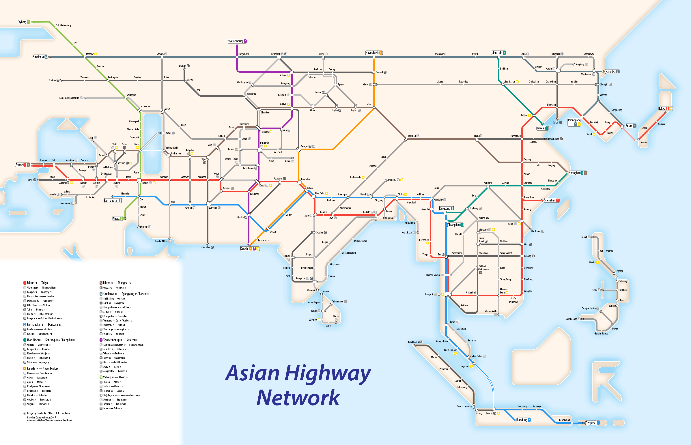
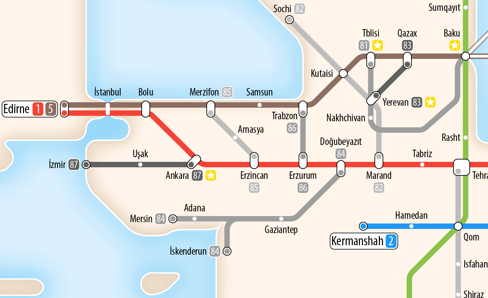
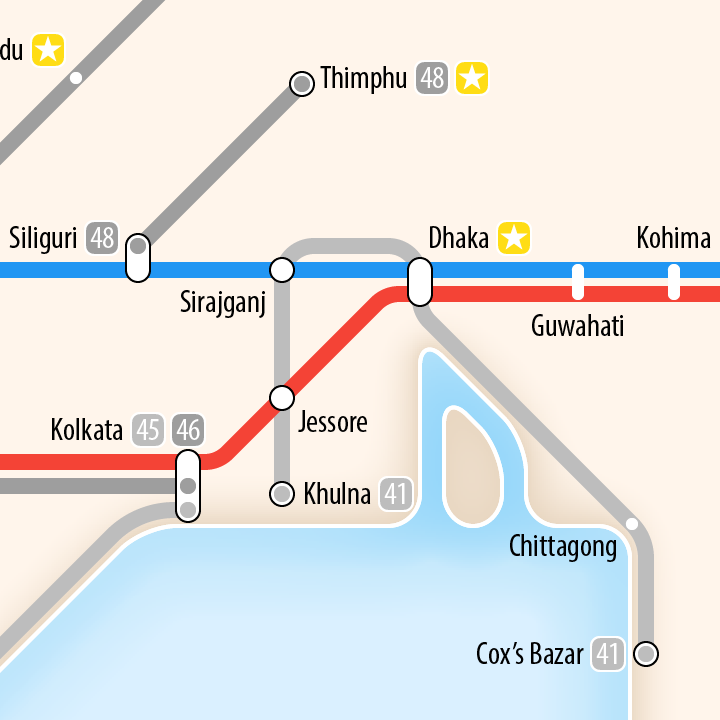

Design Project: Asian Highway Network Map
Over the Christmas break I was inspired by Cameron Booth’s E-Road Network map, and wanted to create my own map. I chose the Asian Highway Network, a similar system to the E-Road network, set up by the United Nations Economic and Social Commission for Asia and the Pacific in 1959. It was created to improve the continent’s highway infrastructure by providing funding to develop these routes.
While the network has not been signposted as well as the E-Road network, it still provides relatively continuous international road travel between Asian countries. However, to actually drive the network, ample planning would be required to get the necessary visas. For some routes, the visas simply don’t exist: driving from Armenia to Azerbaijan, such on AH81, AH82 or AH83, is impossible, as is driving between North and South Korea (AH1/AH6). For this reason, parts of the network are more hopeful than currently accessible.
The highways are numbered based on their zone: numbers 1-9 represent cross-continent routes, coloured brightly on my map. Numbers 10-29 represent Southeast Asia, with 10-19 on the mainland, and 20-29 on the islands of Indonesia and the Philippines. Numbers 30-39 are located in Northeast Asia, and 40-59 are in South Asia, the Indian subcontinent. Numbers 60-69 are in Central Asia, 70-79 are in Iran and Afghanistan, and 80-89 are in Turkey and the Caucasus region.
Close-up gallery
Detail: Turkey and the Caucasus region. One of the hardest areas to map was the Caucasus region: Georgia, Azerbaijan and Armenia. Due to the closed border between Armenia and Azerbaijan, as well as the exclave of Nakhchivan, the road network forms rather a maze dodging borders, for example by taking detours via Iran. Due to limited space I have tried to omit much of the unnecessary detail, but in doing so it is hard to tell which sections take which routes: that the AH82 bypasses Nakhchivan, and it’s possible to move between them in Julfa/Jolfa (the unmarked crossing of the two lines, south of Nakhchivan).
Detail: Bangladesh.
If you have any feedback or suggestions about the map, please email me at ah at xsanda.me